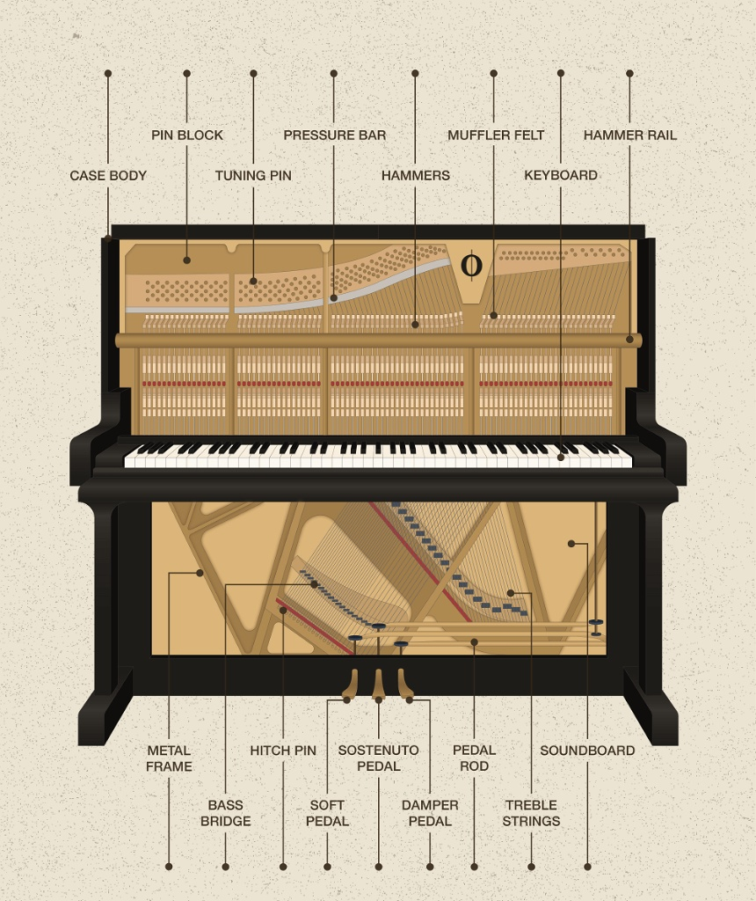
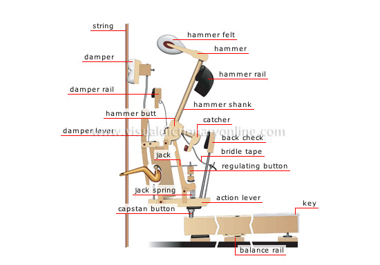

88 Keys

Mechanisms
Below are the different parts of the body of the Piano
Case Body
Provides structural support, protection of internal components, and contributes to the instrument's acoustics
Pin Block
Resists the outward pull of the strings, ensuring tuning stability and proper pitch. Vital for the piano's ability to hold a note
Tuning Pin
Anchors and controls the tension of each piano string
Pressure Bar
Holds the strings firmly in place against the v-bar (or bridge pins) to ensure their correct alignment and proper termination
Metal Frame
Provides structural integrity to withstand immense string tension and influences the piano's sound quality
Bass Bridge
Transmits the vibrations of the bass strings to the soundboard, which then amplifies the sound to produce the deep, resonant tones of the lower register
Hitch Pin
Securely anchors one end of the piano string to the cast-iron frame (plate)
Soft Pedal
Softens the sound by altering the hammer's strike, creating a more muted, ethereal tone for expressive playing, especially in quiet passages
Sostuneto Pedal
Selectively sustains only the notes held down at the moment the pedal is pressed
Hammer Rail
Holds the hammer shanks in place and cushioning them when they return, ensuring they are ready for the next strike and allowing for rapid repetition
Keyboard
Functions as the player's interface, translating key presses into muscial notes
Muffler Felt
Dampens the sound significantly, allowing quiet practice by placing a felt strip between the hammers and strings
Hammers
Strikes the strings when a key is pressed, causing them to vibrate and produce sound
Soundboard
Magnifies faint vibrations from the strings into the audible sound we hear
Trebble Strings
Produces the high-pitched notes of the instrument
Pedal Rod
The metal linkage connecting a foot pedal to the internal mechanism, primarily functioning to control sound modification
Damper Pedal
Lifts all dampers off the piano strings, allowing notes to ring out and blend, creating a sustained, resonant, and richer sound

Mechanisms
Below are the different parts of each key of the Piano
String
Produces sound through vibration when struck
Damper
Stops strings from vibrating, creating clear, distinct notes
Damper Rail
Supports and regulates the felt-covered dampers
Hammer Butt
Translates the key's motion into the hammer's strike and then control its quick rebound
Damper Level
Stops the strings from vibrating and thus end the sound of a note when the corresponding key or pedal is released
Jack
Transfers the energy of the key to the hammer, propelling it toward the string
Jack Spring
Holds the jack inward against the "nose" or "heel" of the hammer butt
Capstan Button
Acts as a contact point between the rear of the key and the underside of the wippen and allows piano technicians to precisely regulate the height of the wippen and the overall key action
Action Lever
Translates the pianist's finger pressure on a key into a rapid hammer strike against the strings
Balance Rail
Provides a stable pivot point (fulcrum) for the keys, allowing them to rock up and down smoothly when played
Hammer Felt
Acts as the impact surface that strikes the strings, with its density and shape determining the tone's volume and character
Hammer
Strikes the strings to produce sound
Hammer Rail
Provides a stable, cushioned base for the hammers to rest on when keys aren't pressed
Hammer Shank
The physical connection between the rest of the action and the hammer head that strikes the strings
Catcher
Stops the hammer from falling all the way back after striking the string, allowing for quick note repetition and preventing unwanted re-strikes
Back Check
Catches the rebounding hammer after it strikes the string, preventing it from falling all the way back down and allowing for rapid note repetition
Bridle Tape
Helps reset the hammer quickly after a note is played and holds the wippen in place when the action is removed for servicing, preventing parts from falling and making repair much easier
Regulating Button
Controls the moment the hammer mechanism disengages, or "lets off," from the string
Key
Translates a simple press into a complex mechanism that makes a felt hammer strike a specific string, producing a musical note, while simultaneously lifting a damper to allow the string to vibrate and resonate, providing pitch, volume, and tone
